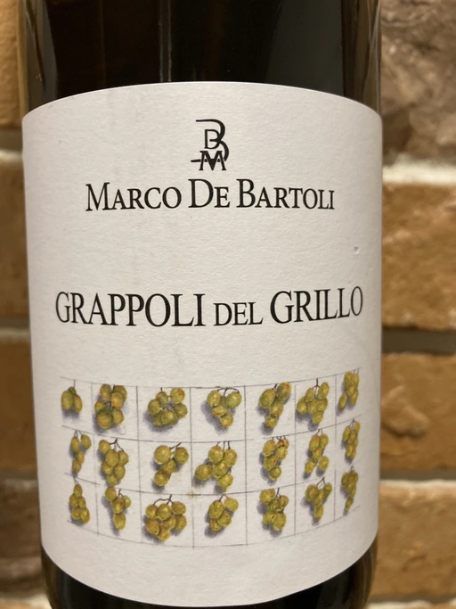

- Type
- White Still, Dry
- Producer
- Marco De Bartoli
- Vintage
- 2018
- Location
- Italy, Sicilia DOC
- Grapes
- Grillo
- Alcohol
- 12
- Sugar
- 1
- Price
- 998 UAH
- Cellar
- N/A
Ratings
2020-12-19 - 8.50
At first Grappoli del Grillo was a huge disappointment until I changed my glass from universal to aroma collector. That was a game changer. We might argue that a great wine should deliver no matter the glass, but I don’t agree with that statement (comment section please). Delicate and sophisticated. Iodine, lime, lemon zest and camomile. Shows character, long evolving aftertaste with flavours of camomile and lime soaked in sea.
Related